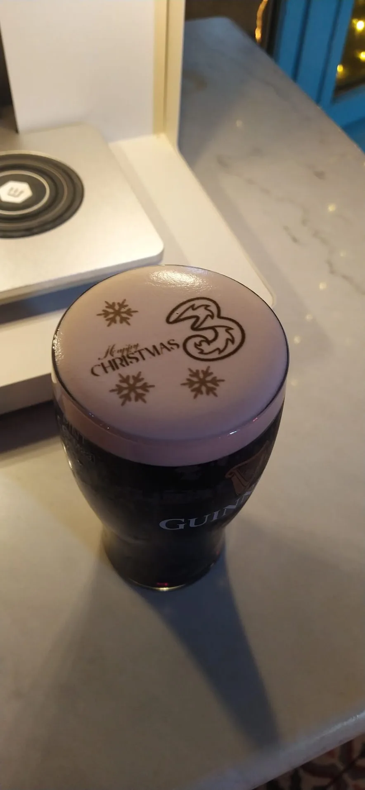
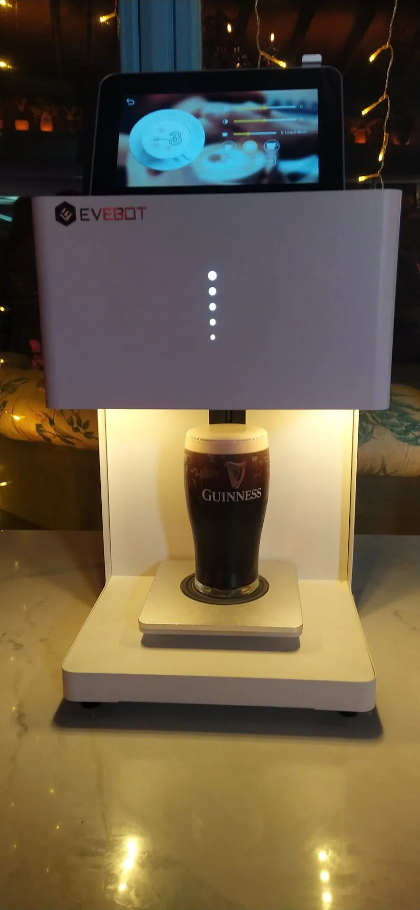

June 19, 2026
Yes, you really can print your face – or a company logo, or the word “Sláinte” – onto the creamy head of a pint of Guinness, and a Guinness pint printer hire in Ireland starts from €450. The machine lays food-safe edible ink straight onto the foam, so within seconds of the pour settling, the person holding the glass is looking back at themselves from the top of their own stout.
It is, hand on heart, one of the best talking points we bring to an event. People queue up. They take the photo before they take the sip. They post it. And because it works on anything with a head of foam – coffee, cappuccino, hot chocolate, cocktails – it earns its keep at a corporate coffee station just as easily as it does at a wedding bar at midnight.
Below we walk through exactly how pint printer hire works, what it costs, what we provide versus what you provide, and why it pairs so well with a photo booth. No fluff – just what you need to decide whether it suits your event.

A Guinness pint printer is a compact, food-safe printing machine that prints a photo, message or logo directly onto the foam head of a drink using certified edible ink. Think of it like an inkjet printer, except the “paper” is the creamy top of a freshly poured pint, and the ink is made entirely from food-grade ingredients that are completely safe to drink.
The image doesn’t float on top or sit on a sticker – it’s laid into the surface of the foam itself, so it looks like it has always been part of the pint. When the head is creamy and settled, the detail is genuinely sharp: faces are recognisable, logos are crisp, and text is perfectly legible. Then you drink it. That’s the whole magic of it – it’s a real, drinkable pint with your face on top.
It’s a uniquely Irish bit of theatre. We’ve poured a lot of pints at events over the years, and nothing makes a crowd reach for their phones quite like seeing the bride and groom, or the company logo, staring up at them from a stout.

The process is quick and it doesn’t slow the bar down once your staff have the hang of it. Here’s the run of it from pour to photo:
There’s no long wait and no mess. One pint follows another, and the only real bottleneck is people insisting on a photo before they take a drink – which, frankly, is the point.

Guinness gets the headline, but the printer prints on any drink with foam or froth. The foam is the canvas, so the same machine handles a surprising range:
That flexibility is worth thinking about when you’re planning. A pint printer isn’t only a late-night wedding novelty – run it as a coffee bar at a morning seminar and you’ve got every delegate walking around with your logo on their cappuccino. Same machine, very different moment.
We get asked to bring the pint printer to all sorts of events, and there are a few where it consistently steals the show:
The common thread is shareability. Every printed pint is a little piece of content the guest creates and posts themselves – which is exactly why brands love it and why it spreads so well online.
Pint printer hire with us is fully turn-key. We bring everything needed to print and keep it running – you bring the drinks. Here’s the split:
What we provide:
What you provide: the drinks themselves – the Guinness, coffee, hot chocolate or cocktails – plus a bar area to set up in and access to power. That’s it. Because you’re supplying the drink, you stay in full control of your bar, your stock and your service, and we simply make every pour photographable.
A pint printer is brilliant on its own, but as a double act with a photo booth it’s hard to beat. Guests get a printed pint at the bar and a printed photo strip from the booth – two physical, shareable keepsakes from the same night, often with the same logo or names tying them together.
It’s a particularly strong combination for brand activations: pair the pint printer with an AI photo booth and guests walk away with an AI-generated portrait and a branded pint, all from one stand. For anyone planning an event in the capital, we run both as part of our wider photo booth hire in Dublin, and we can bundle the pint printer in with whatever booth you choose. You can see the full product on our dedicated Guinness pint printer hire page.
Guinness pint printer hire starts from €450. That covers the machine, edible inks, template library, custom artwork, staff training and technical support – you supply the drinks. As with all our hires, any small travel supplement for venues far from our Dublin and Athlone hubs is shown up front in your quote, so there are no surprises.
A few practical things to plan for:
Yes. The machine prints a photo, message or logo directly onto the creamy head of the pint using food-safe edible ink. Once the pour has settled, the image is laid onto the foam and appears within seconds – and the pint is perfectly drinkable afterwards.
Completely. We only use certified, food-grade edible inks made for printing onto food and drink, so the pint is just as safe to drink as any other. You drink it exactly as you normally would.
Anything with a head of foam or froth. That includes Guinness and other stouts, coffees and cappuccinos, hot chocolate, and foam-topped cocktails. The foam is the canvas, so daytime coffee stations work just as well as a late-night stout bar.
No – you provide the drinks, and we provide everything else: the food-safe printing machine, edible inks, our template library, custom artwork, on-site staff training and technical support throughout. You keep full control of your bar and stock.
Yes. Send us your logo, branding or a custom design and we’ll load it in advance, so every pint or coffee comes out branded. It’s one of the most popular options for corporate events and brand activations.
Hire starts from €450, which includes the machine, edible inks, templates, custom artwork, staff training and technical support. You supply the drinks. Any travel supplement for venues far from our Dublin or Athlone hubs is shown up front in your quote.
If you want the single most photographed, most shared thing at your event – a pint, a coffee or a cocktail with your guests’ faces or your brand on top – the pint printer delivers it every time. Tell us your date, your venue and whether you’d like to pair it with a booth, and we’ll put together an honest, fully inclusive quote. Get in touch with our team and we’ll get your printed pints sorted.